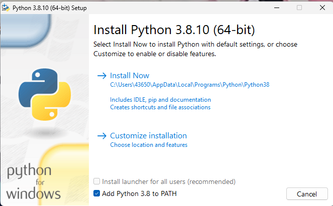
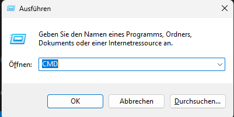
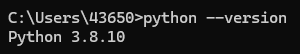
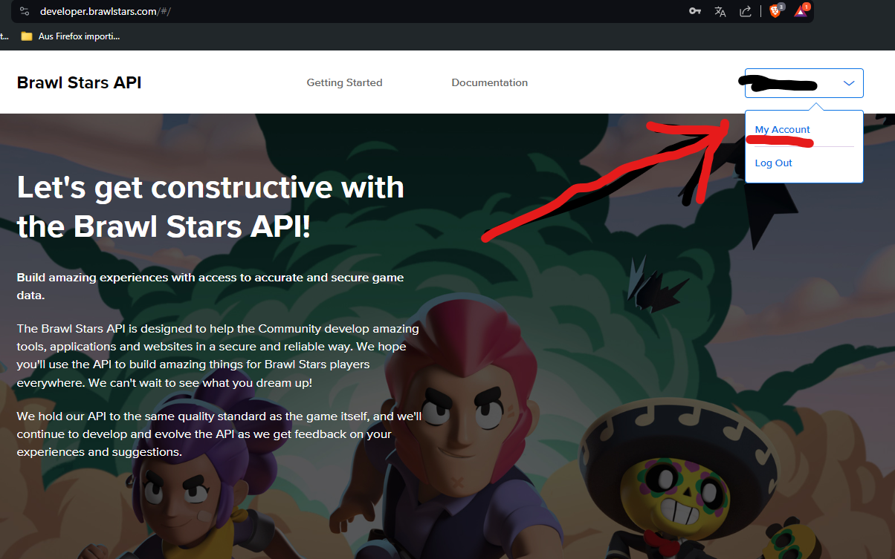
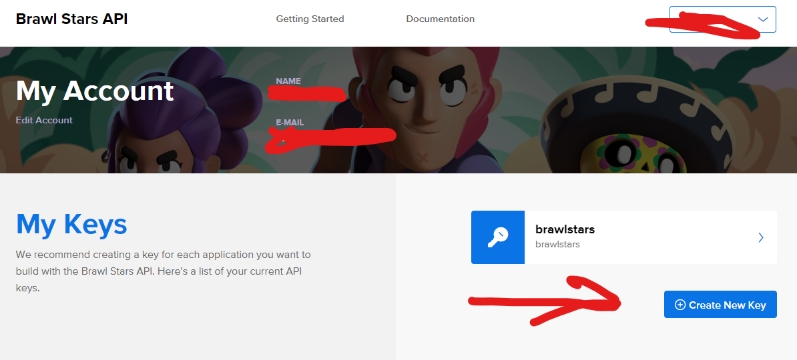
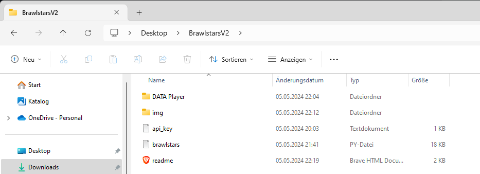
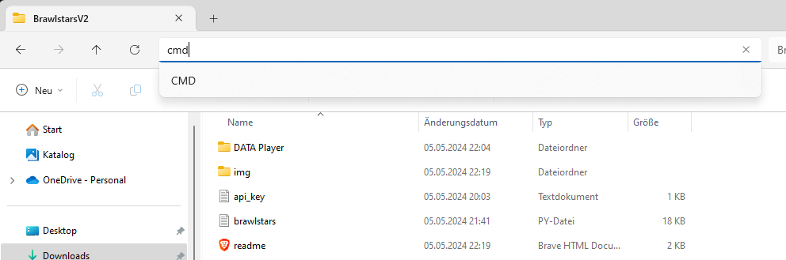

Python installation:
First step, get python here
Very important! click on add to PATH, then install now

Then click close
press windows + R and type in cmd

type in python --version

if you have a version its good
type in pip install requests==2.31.0
the python installation and setup is now done
Get brawlstars api:
Now you need to get a brawlstars api
go to this site
follow the steps and create an account
go to my account in the top right corner

click on create new key

the key name and the description aren't important you can write in what you want
You need to enter your ip adress witch you can find here
copy the token and put it in the api_key.txt file
now you are ready to use the program
How to use the program
go in the folder where the program is located and follow the steps on the pictures


type in python brawlstars.py
finished c:
You can now delete the readme.html file and the img folder if the program is working for you